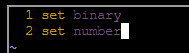
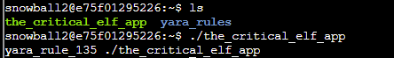
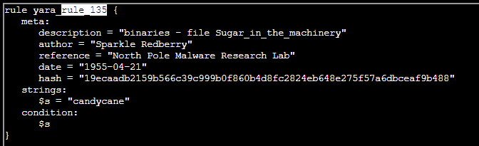
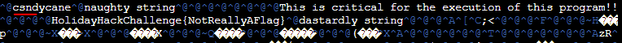
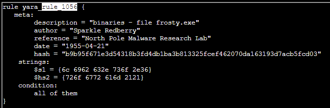
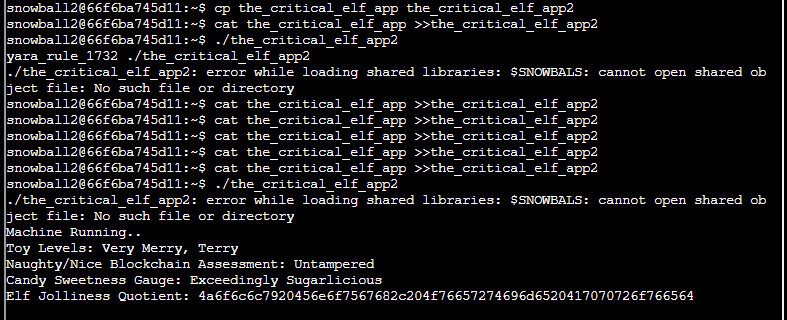

Upon opening the yara challenge Cranberry Pi, you immediately know this elf can figure out how to patch a binary file since they were savvy enough to set a message for you in
Use
Try using
I added the following to my

First off, when running

Use

Open the_critical_elf_app with vim. Remember to use "/" to search like we did with less earlier. Simply change the "candycane" string to "sandycane" or anything else really. Just make sure the string length is the same. Once done, run the program again.

Running the program again produces another yara rule error. Check out what it is.

This hex converts to "libc.so.6"
Make sure to try running the program afterward to ensure you don't receive a segmentation fault. Once again, open the program in vim, use "/" to search, change the string and save.
Convert again to get another string: "rogram!!"
Use the same method as above to change those strings. When finished, run the program again. Unfortunately, we get yet another rule to bypass.
meta:
description = "binaries - alwayz_winter.exe"
author = "Santa"
reference = "North Pole Malware Research Lab"
date = "1955-04-22"
hash = "c1e31a539898aab18f483d9e7b3c698ea45799e78bddc919a7dbebb1b40193a8"
strings:
$s1 = "This is critical for the execution of this program!!" fullword ascii
$s2 = "__frame_dummy_init_array_entry" fullword ascii
change $s3 = ".note.gnu.property" fullword ascii
$s4 = ".eh_frame_hdr" fullword ascii
$s5 = "__FRAME_END__" fullword ascii
$s6 = "__GNU_EH_FRAME_HDR" fullword ascii
change $s7 = "frame_dummy" fullword ascii
change $s8 = ".note.gnu.build-id" fullword ascii
$s9 = "completed.8060" fullword ascii
$s10 = "_IO_stdin_used" fullword ascii
change $s11 = ".note.ABI-tag" fullword ascii
change $s12 = "naughty string" fullword ascii
change $s13 = "dastardly string" fullword ascii
$s14 = "__do_global_dtors_aux_fini_array_entry" fullword ascii
$s15 = "__libc_start_main@@GLIBC_2.2.5" fullword ascii
$s16 = "GLIBC_2.2.5" fullword ascii
change $s17 = "its_a_holly_jolly_variable" fullword ascii
$s18 = "__cxa_finalize" fullword ascii
change $s19 = "HolidayHackChallenge{NotReallyAFlag}" fullword ascii
$s20 = "__libc_csu_init" fullword ascii
condition:
uint32(1) == 0x02464c45 and filesize < 50KB and
10 of them
To get around that size condition at the end, you can just make a copy of the executable and add some garbage data to the end of it. Nothing points to the extra data so it doesn't really matter what it is. Just append some junk to the end and run it!

Enter :%!xxd to view the hexdump in vim.
% is used in vim to replace the contents of the file with the output of the shell command run using !.
:%!xxd
Be sure to talk to Fitzy Shortstack after solving the challenge to gather more hints for the Splunk challenge!